Barn Owl A.3
Organic plumage refinement. Follow the folded wing from the short shoulder feathers to the barred flight feathers near the tail. Switch to clay to inspect the overlap without pigmentation.
Photographic references


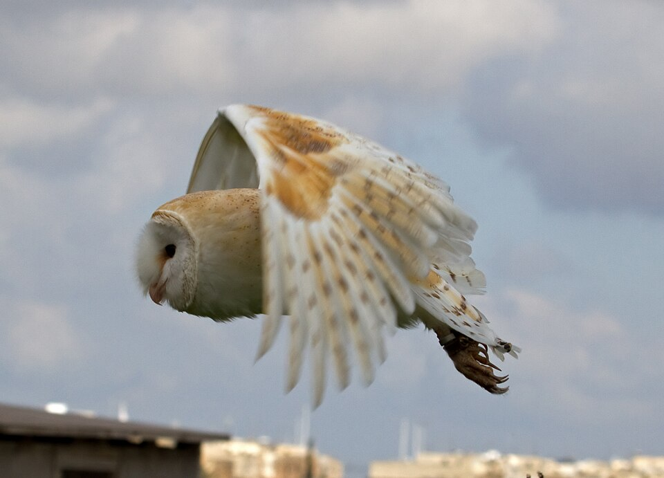
.jpg){kind=link}
Both photographs are reproduced under CC BY 2.0. The head and dorsal wing textures use cropped and remapped colour samples from Ward’s photograph. The eye openings, lids and bill use the accepted A.2 geometry.
Folded and extended feather groups
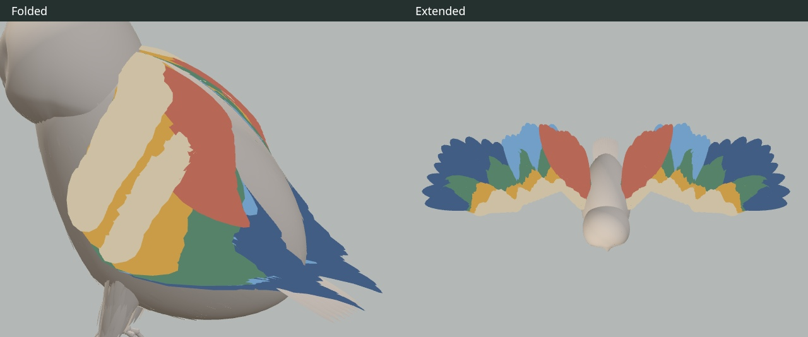
■ Scapulars■ Lesser coverts■ Median coverts■ Greater coverts■ Secondaries■ Primaries
Matched plates
A.2 is on the left and A.3 on the right. Both share the camera, exposure, lighting, action and simulation time. The scale bars show distance in the image plane. Select any plate for the full-size image.
Folded wing
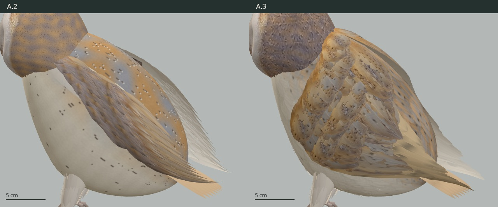
Facial disc
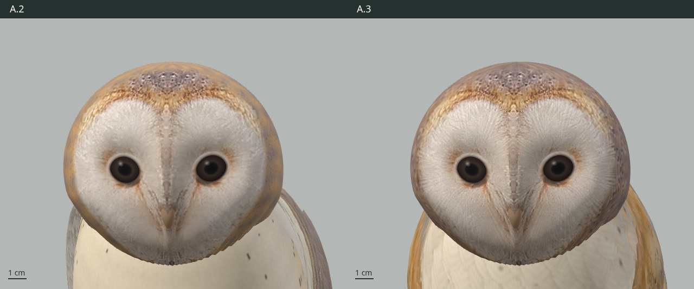
Breast and neck
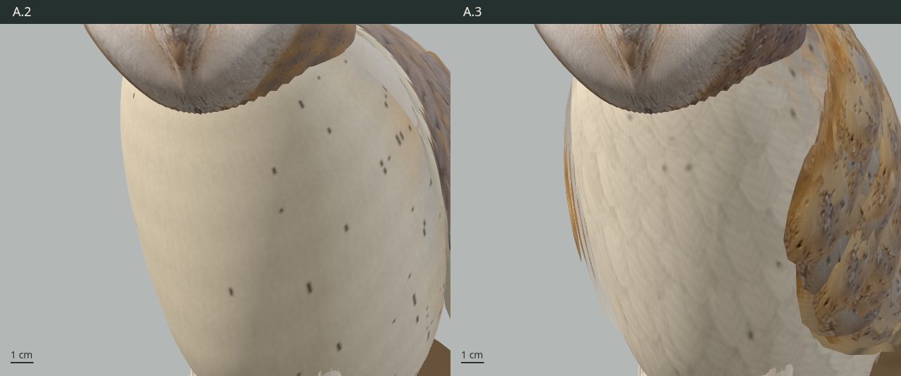
Front
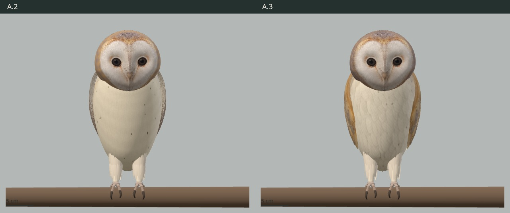
Side
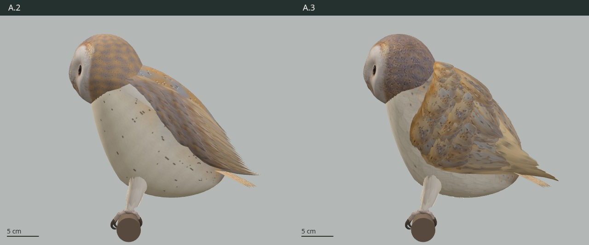
Rear
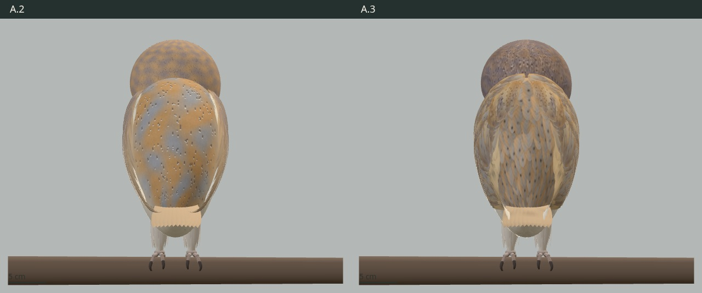
Three-quarter
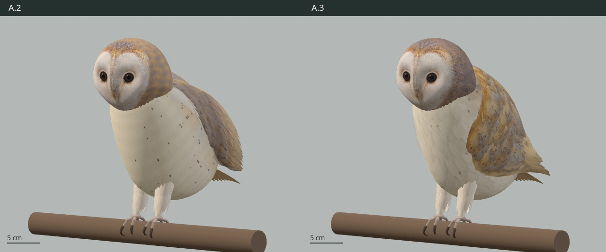
Extended wings from above
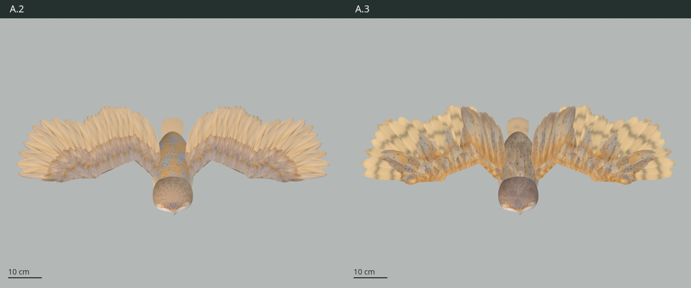
Extended wings from below
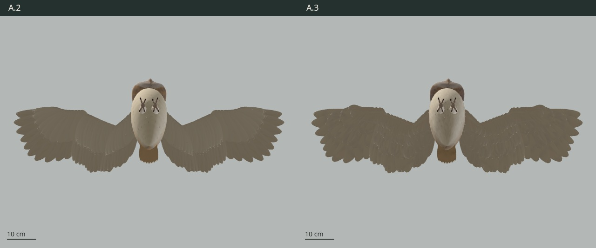
Perched silhouette
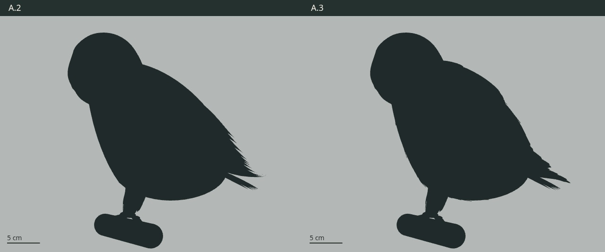
Flying silhouette
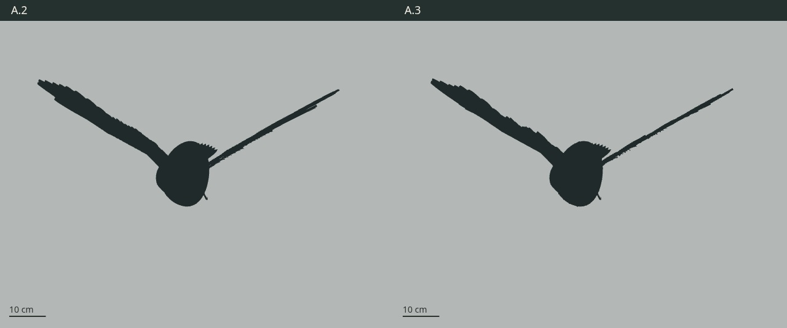
Motion recordings
Each four-second recording shows both revisions at 20 fps, driven at 60 simulation steps per second. The camera tracks the A.2 root. The flight, glide, bank and landing takes start from a common powered-flight warm-up.
Perched idle and tracking
Takeoff
Powered flight
Gliding
Banking
Landing and grip
Rendering measurements
One fully visible owl at 640 × 500. Each row samples 32 animated frames after 12 warm-up draws. Timing includes the draw and a synchronous one-pixel readback in Chromium on ANGLE SwiftShader. Hardware GPU frame times remain unmeasured.
| Revision | LOD | Triangles | Draws | Albedo MiB | Median ms | P95 ms |
|---|---|---|---|---|---|---|
| A.2 | 0 | 54,100 | 14 | 1.33 | 107.5 | 150.8 |
| A.3 | 0 | 48,564 | 14 | 5.00 | 92.9 | 104.8 |
| A.2 | 1 | 31,128 | 14 | 1.33 | 89.0 | 101.9 |
| A.3 | 1 | 26,744 | 14 | 5.00 | 72.8 | 90.5 |
| A.2 | 2 | 9,924 | 14 | 1.33 | 24.5 | 60.4 |
| A.3 | 2 | 9,428 | 14 | 5.00 | 21.5 | 58.1 |
The six wing meshes share one material. Their four colour-map variants per tract carry the feather shafts, barbs, flecks and barring. The three mipmapped albedo maps are shared by concurrent A.3 specimens. The breast carries 148 short contour tips at LOD0 and 64 at LOD1 in its existing draw. LOD2 uses the baked breast texture and simpler wing webs.
Perched height measured 30.8 cm for both revisions. Extended span measured 93.1 cm for A.2 and 93.4 cm for A.3. Raw timings and bounds.